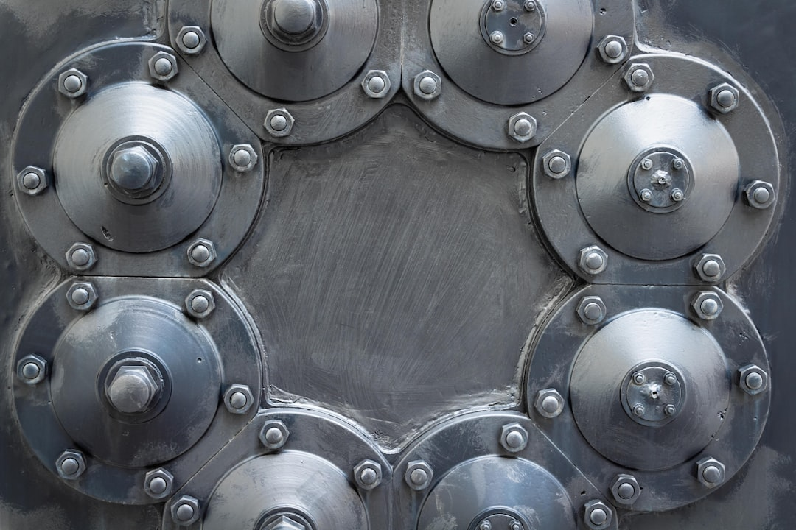

한국판 국부펀드 2026 출범, AI·소재 어디 꽂히나

정부는 2026년 출범을 목표로 '한국판 국부펀드'를 설계 중이며, AI·반도체·첨단소재를 핵심 투자 분야로 명시했다. 운용 규모는 초기 수십조 원 수준으로 논의되고 있으며, 삼성전자·SK하이닉스 같은 대형주가 아닌 소부장 중간 밸류체인에 집중 배분되는 구조가 검토되고 있다.
산업부는 2025년 소부장 투자지원금을 1700억 원·6개 분야(반도체·디스플레이·이차전지·바이오·로봇·방산)로 확대했다. 이 중 로봇·방산이 신규로 추가되어 전통 소부장 3개 분야에서 전략 산업 전반으로 지원 범위가 확장됐다.
정부는 '반도체·AI·데이터센터 삼각축'으로 요약되는 1600조 원 규모의 메가프로젝트를 공식 선언했다. 호남 반도체 클러스터는 차량용 반도체 소재로 특화 방향이 정해졌고, 경기·충청 중심의 기존 메모리 벨트와의 역할 분담이 구체화되고 있다.
2019년 일본 수출규제 이후 소부장 예산은 누적 4조 원 이상이 집행됐지만, 소재 국산화율이 70%를 넘긴 품목은 포토레지스트·불화수소 등 일부에 그친다. 국부펀드가 '정책 보조금'이 아닌 '수익 추구형 장기 투자'로 설계될 경우, 초기 수익성이 낮은 소재 원료 단계보다 응용 소재·부품 단계에 편중될 가능성이 높다.
국부펀드의 핵심 변수는 '어느 밸류체인 단계에 투자하느냐'다. 원료 광물 확보(갈륨·게르마늄·이트륨)는 수익 회수 기간이 10년 이상으로 길어 국부펀드 수익률 목표와 충돌할 수 있다. 반면 반도체 공정 소재(포토레지스트·CMP 슬러리)나 차량용 파워소자 기판 소재처럼 이미 양산 단계에 있는 품목은 투자 매력도가 높다. 국부펀드가 실질적으로 공급망 자립에 기여하려면 원료-가공-응용 소재를 연계한 패키지 투자 기준이 명확히 수립돼야 한다.
소부장 1700억 원에 로봇·방산이 신규 편입된 것은 단순한 예산 확대가 아니라 산업 범위 재정의다. 로봇용 감속기 소재(고경도 합금강)와 방산용 특수합금은 기존 반도체 소재와 공급 루트가 전혀 다르다. 현장에서 보면 이 두 분야는 국내 중소 소재기업의 납품 경험이 거의 없어, 지원금이 집행돼도 실제 국산화까지 3~5년의 기술 격차가 추가로 발생할 수 있다.
직접 수혜는 이미 양산 궤도에 오른 국내 소부장 중견기업이다. 반도체 CMP 슬러리(케이씨텍), 블랭크 마스크(에스앤에스텍), 차량용 파워반도체 기판 소재(SKC 등)처럼 국산화율이 50~70% 사이에서 정체된 품목의 기업이 국부펀드+정책 보조금 이중 수혜를 받을 가능성이 크다.
호남 차량용 반도체 클러스터는 방향 설정이 완료된 만큼 해당 지역 파워소자·SiC 기판 관련 소재 기업들이 중기적 수혜 구간에 진입한다. SiC(탄화규소) 기판 소재는 현재 국내 자급률이 10% 미만으로, 국부펀드 투자와 연계되면 일본 로옴·독일 인피니언 의존 구조에서 부분 이탈이 가능하다.
원료 단계 국산화는 이번에도 후순위로 밀릴 가능성이 높다. 갈륨·게르마늄·이트륨 같은 핵심 원료 소재는 수익 회수 기간이 길어 수익률 기준의 국부펀드 포트폴리오에서 제외되기 쉽다. 중국 수출통제가 장기화될수록 원료 병목이 응용 소재 투자의 효과 자체를 반감시킬 수 있다.
지원 범위 확장(로봇·방산 신규 추가)으로 기존 반도체·디스플레이 소재 기업은 예산 경쟁이 심화된다. 1700억 원을 6개 분야로 나누면 분야당 평균 280억 원 수준인데, 대규모 파일럿 라인 구축에는 최소 500억 원 이상이 필요한 소재 분야가 다수여서 지원 규모의 분산이 오히려 '얕은 지원'을 양산할 수 있다.
개인 투자자라면 국부펀드 출범 이전 6개월이 핵심 매수 구간이다. 국부펀드 투자 확정 이후에는 이미 주가에 선반영될 가능성이 높으므로, 정부가 '투자 분야'를 구체화하는 시점(법안 통과·운용사 선정 공고)을 모니터링하면서 해당 소재 분야 ETF 또는 개별 소부장 중견기업을 분할 매수하는 전략이 합리적이다.
기업 구매담당자는 국부펀드 연계 R&D 과제 공고를 면밀히 추적해야 한다. 소부장 지원금은 단순 보조금이 아니라 '수요기업-공급기업 컨소시엄' 형태로 설계되는 경우가 많아, 삼성전자·SK하이닉스 같은 수요기업이 컨소시엄에 이름을 올리면 납품 계약 우선권이 동반될 수 있다.
실제 조달 현장에서는 — 지원금 공고가 나오면 소재 공급사들이 수요기업 확인서를 먼저 요구한다. 확인서 없이 단독 신청한 기업의 과제 통과율은 사실상 한 자리 수다. 구매담당자가 '지원금은 공급사 일'이라고 방관하면, 정작 국산화 수혜를 받아야 할 소재가 해외 업체의 컨소시엄으로 넘어가는 역설이 발생한다. 구매팀이 공급사 컨소시엄에 공동 참여하는 것이 조달 리스크를 줄이는 가장 빠른 방법이다.
이 포스팅은 쿠팡 파트너스 활동의 일환으로 수수료를 제공받습니다.